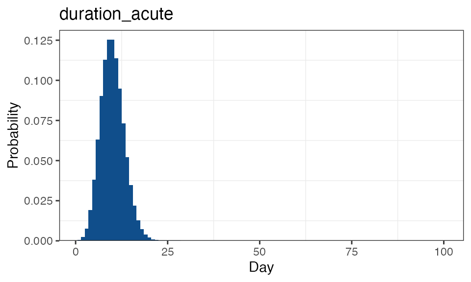

The inbuilt transmission model
Bob Verity
2023-03-28
Source:vignettes/model_description.Rmd
model_description.RmdThe first step in the SIMPLEGEN pipeline is to simulate from an epidemiological transmission model. Any model can be used as long as it can produce output in the required format (described in the next vignette), but an inbuilt transmission model is included with the pipeline to make life easier. The inbuilt model is designed to be as simple as possible but no simpler. It does not attempt to be a complete phenomenological description of the malaria life cycle - rather it is a cartoon that tries to capture some of the key relationships that we tend to see in real data.
This vignette gives a high-level description of the inbuilt transmission model, including some of the key assumptions. For details on how to run this model, see this vignette.
Infections and host states
The model works by tracking individual infections. Each host within
the model can be thought of having multiple infection “slots”, and each
new infection falls into a new slot. There are a finite number of slots
available per host, defined by max_infections, but most of
the time we can set this number to be large enough that hosts never
saturate all their slots.
Each infection can be thought of as an independent episode of malaria that goes through the following stages:
- latent (liver stage) infection
- acute blood-stage
- chronic blood-stage
- clearance
Infections can pass through all four stages in order, or they can skip over the acute or chronic stages depending on the model parameters (see Figure 4). The acute stage essentially represents the symptomatic stage of infection, although the word “acute” has been used rather than “symptomatic” to avoid forcing a clinical interpretation on the model. The chronic stage is designed to capture long-lasting infections, including possible asymptomatic and/or sub-patent stages (more on detection later).
The state of a host is defined using the decision tree in Figure 1.

Unless the host has recently received treatment (and so is in the prophylactic stage) the state of the host is dictated by the states of the infections it carries. This can be seen in Figure 2, which shows the host state for a simple case of two overlapping infections

The only host state that is not dictated directly from its infections is the treated (aka prophylactic) state. Treatment is described fully in a later section, but in simple terms treatment causes all blood-stage infections to clear immediately. Liver-stage infections are not cleared, i.e. treatment does not represent a radical cure. After treatment, the host enters a prophylactic state in which new liver-stage infections can occur, but any infections leaving the liver within the prophylactic period are immediately cured. Eventually the prophylaxis wears off and the host transitions back into the susceptible or exposed state. Figure 3 shows a second example of host states, this time for a more complex case involving treatment and prophylaxis.

Given the description above, we can now visualise the model in a classical compartmental structure. Figure 4 shows the possible states and transitions of both infections and hosts.

Notice there are no rates or parameters on any of the arrows in Figure 4. This is because state durations and transition probabilities are modelled using flexible distributions rather than fixed parameter values.
Flexible distributions
There are two elements that describe how infections move between states - duration distributions and transition probabilities. Duration distributions dictate the probability that an infection leaves a given state on each day since entering that state. Once it is decided that an infection will leave a state, transition probabilities dictate the chance of moving to each possible destination state.
Both duration distributions and transition probabilities can be defined in a flexible way, giving fine control over how infections move between states. Duration distributions can be input as a vector of daily probabilities, and then durations within the model are obtained by sampling from this vector. Alternatively, the user can input a list of vectors, in which case the first element applies the first time the host is exposed to an infection, the second element the second time, and so on. Once we reach the final element in the list, this applies for all subsequent infections. Similarly, transition probabilities can be defined as a single value, or as a vector of values in which case the first value applies to the first exposure, the second value to the second exposure, and so on. By varying these inputs we can capture some fairly detailed patterns within quite a simple model. For example, we could arrive at a simple exposure-driven immunity model by setting up distributions such that subsequent infections are more likely to be chronic, and/or last longer.
Finally, there are some daily probabilities that can be defined in a flexible way, for example the daily probability of being detected by microscopy following infection. These differ from duration distributions in that they do not need to sum to one, rather they give a probability between 0 and 1 on each day. These can also be defined as either a vector or a list of vectors that increment with exposure.
Here is a complete list of parameters that can be defined in a flexible way:
duration distributions:
-
duration_acute,duration_chronic: the duration of acute and chronic infection -
time_treatment_acute,time_treatment_chronic: the time until considering seeking treatment in the acute and chronic stages (more info on treatment below) -
duration_prophylactic: the duration of post-treatment prophylaxis
transition probabilities:
-
prob_infection: the probability of becoming infected given a bite from an infectious mosquito -
prob_acute: the probability of an infection going to acute stage vs. directly to chronic stage -
prob_AC: the probability of an acute infection going to chronic stage vs. clearing directly
daily probabilities:
-
detectability_microscopy_acute,detectability_microscopy_chronic: detectability by microscopy in the acute and chronic stages -
detectability_PCR_acute,detectability_PCR_chronic: detectability by polymerase chain reaction (PCR) in the acute and chronic stages -
infectivity_acute,infectivity_chronic: onward infectivity of infections in the acute and chronic stages
All flexible distributions can be visualised using the function
plot_flex_distribution(), for example:
simplegen_project() %>%
define_epi_model_parameters() %>%
plot_flex_distribution(name = "duration_acute")
In the case of list inputs, all distributions are plotted together:
simplegen_project() %>%
define_epi_model_parameters(duration_acute = list(dgeom(0:30, 0.2),
dgeom(0:30, 0.1))) %>%
plot_flex_distribution(name = "duration_acute")
Treatment
We break treatment down into two elements: first, the time it takes
for the host to be prompted to seek treatment, for example due
to the emergence of clinical features, and second, whether the host
actually seeks treatment at this point in time. The latter is dictated
in the model by a host-specific treatment-seeking probability, \(p_i\), that is defined at birth and stays
with the host for the duration of their life. This treatment-seeking
probability is intended to capture the long-term factors that influence
an individual’s propensity or ability to obtain treatment. These factors
may include distance to the nearest health facility, economic situation,
and a host of other factors. The value of \(p_i\) is drawn independently for each host
from a Beta distribution with mean treatment_seeking_mean
and standard deviation treatment_seeking_sd. These
parameters allow the user to define both the mean access to care in the
population and the extent of inequality in access to care.
In parameter inputs we can define both the distribution of duration
of disease (acute and chronic), and the distribution of time until
seeking treatment. These are competing hazards - whichever one of these
occurs first takes precedence. If the disease clears naturally first
then the host does not seek treatment. We also note that treatment can
only be prompted once per infection: if an infection goes through both
acute and then chronic stages then only the acute stage will prompt
treatment (from time_treatment_acute), whereas if an
infection goes directly to chronic then this stage will prompt treatment
(from time_treatment_chronic).
For example, imagine we want to model a population that has good
access to healthcare overall, but with wide disparity between
individuals. We choose parameter values
treatment_seeking_mean = 0.7 and
treatment_seeking_sd = 0.2, which we can visualise using
the plot_treatment_seeking() function:
simplegen_project() %>%
define_epi_model_parameters(treatment_seeking_mean = 0.7,
treatment_seeking_sd = 0.2) %>%
plot_treatment_seeking()
The dashed line shows that at a population level there is a 70% chance of seeking treatment for malaria, but there is also considerable spread around this value. Each host has a value \(p_i\) drawn from this distribution once at birth. For example, imagine a single individual for which \(p_i = 0.1\). This individual has poor access to malaria treatment for one reason or another. If this individual becomes infected and if clinical symptoms occur before the disease has chance to clear naturally, then this individual will make the decision to obtain treatment with only a 10% probability. If they choose not to seek treatment then the disease will continue until it clears naturally.
Upon treatment, all blood-stage infections are immediately cured, and the host enters a prophylactic stage in which no new infections are possible. Liver stage infections are not directly cured, but infections that leave the liver stage while the host is in the prophylactic stage are considered immediately cured. Sexual stages are not directly cured, although the termination of the diseased stage will lead to the eventual termination of the sexual stage after the appropriate time-lag.
Infectivity and mosquitoes
The onward infectivity of an infection stems from the sexual stage of
the parasite. These are also modelled as going through acute and chronic
stages, which are lagged from the asexual stages by a fixed duration.
For example, take an infection that transitions from liver stage to
acute stage on day 20, then to chronic infection on day 40, then
recovers on day 100. If the gametocyte lag parameter g is
equal to 10 days then the infection will enter the acute infective stage
on day 30, the chronic infective stage on day 50, and will become
uninfective on day 110. The daily infectivity of the acute and chronic
stages can be defined flexibly (see above). If a host carries multiple
infections then the infectivity is taken to be the maximum of
the infectivity of its individual infections.
Mosquitoes exist in three stages: susceptible, latently infected, and
infectious. Upon biting an infectious human host and becoming infected,
they enter the latent stage which has fixed duration v (the
extrinsic incubation period). Upon leaving the latent stage they become
infective to humans. Natural death occurs with constant rate
mu throughout the mosquito lifetime, and every death is
matched with a new birth in the susceptible stage, leading to a constant
mosquito population size M (strictly speaking this is size
of the adult female mosquito population).
Demographics
The stable age distribution of hosts is calculated from life tables. If no life table is supplied by the user then values are taken from Mali demographic data by default. Human deaths are matched by new births, leading to a constant total human population size. Only natural death is considered, i.e. malaria does not lead to increased chance of death.
Migration
All of the model description above applies to a single epidemiological unit - a single deme. Human migration is modelled as a stochastic process in which hosts move between demes. Currently, only a simple migration model is implemented in which hosts move between demes according to fixed probabilities that are defined in a migration matrix.